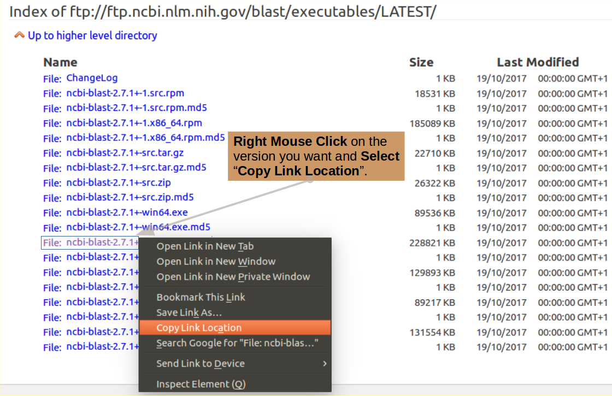

|
|
|
|
Many Bioinformatics objectives can be achieved using Web sites (NCBI, EBI, Expasy and many more) and/or software with intuitive Graphical User Interfaces (GUIs). However, many more cannot, especially those involving large datasets, experimental software and compute intensive tasks are involved. In such circumstances, the stark environment of the UNIX command line is the preferred (often the only) choice.
As most researchers will not have the luxurious option of delegating all their computing activities to an "expert Bioinformatition", it is sensible for all to, at the very least, have some familiarity with the UNIX command line. It is the objective of this "Critical Sheet" to start the complete beginner on the journey towards such an understanding.
It would not be practical to attempt a full competence with UNIX here. More modest targets include:
The approach of this Guide is to lead the user through a simple exercise that provides a showcase for all the most common UNIX commands as well as a few "tricks" that, hopefully, make life a little easier. At many stages, users will be offered the opportunity to consider how the effects of a UNIX command might be achieved (if clumsily) using a typical LINUX GUI. Whenever a new command is introduced, a link to the relevant Manual Pages will be provided.
In the first stages of the exercise, no effort is made to include any "Biological Purpose". We just meander through an investigation of Basic UNIX commands. Later on, the exercise will include some relevant data files and attempt to do some vaguely "meaningful things".
Beyond a level of computer literacy that is unavoidable in this technologically over soaked era, hardly anything really.
However, it would help to understand the way files and directories
(folders if you prefer) are arranged and referenced in a UNIX environment
however. If you feel the need, spend a few minutes glancing through the Video below.
UNIX File Structure & Reference - A video
In which we strive to introduce as many common UNIX commands as is practical.
Every time a new command is used, a link to the official Manual Pages for that command is provided. Here you can wallow in the full unabridged story. The exercise represents a brutally abridged practical overview.
Where it was felt to be helpful, the way a step of the exercise could be achieved using a typical LINUX GUI environment (default Ubuntu) is offered.
So, open a fresh command line terminal window (Ctrl-Alt-t will normally do this) and follow along. First some rather function free warm up, leading eventually to use of the command line to achieve vaguely Bioinformatic objectives.
{Hint: Especially when commands are long, why not Copy/Paste them from this page?}
Introducing cd. This command enables a user to move around the UNIX File System. That is, to change the working directory.
First ensure we all start in the same place with the simple command:
cd
Introducing pwd. This command reports the absolute address of the working directory. That is, it prints the working directory.
Confirm the working directory is as expected with the command:
pwd

Move into your Desktop directory with the command:
cd Desktop

Introducing
mkdir.
A command for ma
Make a new directory in which to continue the exercise with the command:
mkdir ProjectX
Take a look at your graphical Desktop. You should be able to see an icon representing your creation.

 Right hand mouse click in the Desktop background.
Select New Folder.
Right hand mouse click in the Desktop background.
Select New Folder.
 Right hand mouse click on the new Untitled Folder icon.
Select Rename.
Enter ProjectX.
Right hand mouse click on the new Untitled Folder icon.
Select Rename.
Enter ProjectX.
 Admire new Folder/Directory called ProjectX.
Admire new Folder/Directory called ProjectX.
Having made the directory ProjectX, make it the current working directory with the command:
cd ProjectX
Introducing ls. A command to list the contents of a directory.
... and then display the contents of ProjectX with the command:
ls
 Double Click on the ProjectX folder icon.
Double Click on the ProjectX folder icon.
 Admire the emptiness of the Folder/Directory called ProjectX.
Admire the emptiness of the Folder/Directory called ProjectX.
Introducing touch. In the exercise, we use touch to create new empty files and to update the modification times of existing files.
Begin to populate ProjectX with an empty file called "a", with the command:
touch a
 Right hand mouse click in the opened ProjectX background.
Select Empty Document from the Next Document menu.
Right hand mouse click in the opened ProjectX background.
Select Empty Document from the Next Document menu.
 Right hand mouse click on the new Untitled Document icon.
Select Rename.
Enter a.
Right hand mouse click on the new Untitled Document icon.
Select Rename.
Enter a.
 Admire the magnificence of the new file,
imaginatively called a.
Admire the magnificence of the new file,
imaginatively called a.
touch can make lots of fine new empty files in one go. Do this with the command:
touch b c aa bb cc abc def ghi
 Repeat the formula for the creation of the file a
for each of the other 8 new files.
Incredibly tedious!!.
The command line is typically the best choice for repeated operations.
Repeat the formula for the creation of the file a
for each of the other 8 new files.
Incredibly tedious!!.
The command line is typically the best choice for repeated operations.
While in the mode of creating useless things, why not a splendour of directories with the command:
mkdir dirI dirII dirIII dirIV dirV
Finally, inspect your handiwork with the command:
ls
Comment

GUI equivalent.
 Repeat the formula for the creation of the ProjectX directory
for each of the 5 new directories.
Again,Incredibly tedious!!.
The command line is far more efficient.
As the file and directory icons are all displayed by default,
no graphical analogy for the ls is necessary.
Repeat the formula for the creation of the ProjectX directory
for each of the 5 new directories.
Again,Incredibly tedious!!.
The command line is far more efficient.
As the file and directory icons are all displayed by default,
no graphical analogy for the ls is necessary.
Most UNIX commands can be customised by the use of switches.
Switches are specified immediately after the command itself and prefixed by '-'.
The full range of available switches for any given command is included in its Manual Pages.
Inspect the contents of ProjectX once more, but this time, request a little more detail using ls with the l switch.
ls -l

 The Icons retreat and are replaced by a textual List.
The Icons retreat and are replaced by a textual List. Well, more or less the same display. But, what a performance!!
Well, more or less the same display. But, what a performance!!
Introducing mv. A command to rename files/directories or move them between directories.
Move all the files with single letter names into the directory dirI with the command:
mv ? dirI
 Select all single letter file names
(Click on each while holding the Ctrl key down).
Right hand mouse click on the selected icons.
Select Cut.
Select all single letter file names
(Click on each while holding the Ctrl key down).
Right hand mouse click on the selected icons.
Select Cut.
 Open the dirI directory (double click on its icon).
Right hand mouse click in the dirI background.
Select Paste..
Open the dirI directory (double click on its icon).
Right hand mouse click in the dirI background.
Select Paste..
 Lo & Behold.
Lo & Behold.
If you press the '↑' key the last command you issued will be reissued. Repeatedly pressing '↑' will take you further and further back through as many commands as your system is configured to remember. Why not, try it? The '↓' key moves you forward through your command history.
As the next command is very similar to the last, you could:
mv ? dirI
mv ?? dirII
Not much gain in this case, but a wonderful trick when dealing with typos in a long command!
Continue in fashion logical to move all the files with two letter names into the directory dirII with the command:
mv ?? dirII
and ever predictably, move the files with three character names to dirIII with the command:
mv ??? dirIII
Examine the consequences of your actions with the command:
ls -R

Introducing ln. A command to make links to files/directories.
A link is broadly equivalent to a Windows short-cut. Using links can enable a file/directory to be accessed from different places.
Make a link from the working directory ('.', i.e. ProjectX) to the file a (now in the directory dirI), with the command:
ln -s dirI/a .
By default (strangely in my opinion), ln will make hard links. hard links are ... well, hard ... beyond what we should consider here. Wikipedia deals with hard & symbolic links fairly gently if you are curious. To make a simple symbolic or soft link, which is by far the most common intention, you must use the '-s' switch.
If the link is to be given name that is different to that of the linked file, clearly, that name must be specified
In this command, only the directory in which the link was to reside was specified ('.', i.e. ProjectX).
Now create a symbolic link, not having the same name as the linked file. Specifically, a link called Link_to_aa, from the working directory ('.', i.e. ProjectX) to the file aa (now in the directory dirII), with the command:
ln -s dirII/aa Link_to_aa
Inspect the effects of your last few instructions, with the command:
ls -l

Make just one more empty file with the poetry drenched command:
touch .Cats_in_the_cupboard_but_they_dont_see_me
Note that the name of the file into which you have just breathed life, begins with a '.'!
Search for it amongst its brothers with the command:
ls
Nowhere to be seen?
Files (and Directories) with names that commence with a '.' are considered as Hidden by UNIX. Generally, they will not be displayed by ls.
You will find many Hidden Files in your Home Directory ('~'). These being Configuration Files (and Directories) for various software packages, plus an assortment of other System Files. These are important files and directories that must be present. However, generally, a user would not wish to be constantly reminded of their presence.
Try again with the command:
ls -a
See it now?
The '-a' switch for ls requests that all Files be displayed
(including Hidden ones).
Comment

GUI equivalent.

The next command involves typing long file names accurately.
The command line is cruel! One typing mistake and it does not work!
This command could be very tricky if you had not the option of Copy/Paste from this web page!
In a previous "Suggestion", you saw how typos might be corrected with minimal pain. But ... better still ... using what is known as "Tab Completion" most typos could be avoided altogether.
Basically, if you enter enough of a file name/directory name/command (according to context) to allow the system to know what you wish to type next, you need only to press the Tab key and UNIX will type on up to the next point where ambiguity exists (often to "Completion").
As a practical example, why not create the next command as follows?:
mv .
mv .Cats_in_the_cupboard_but_they_dont_see_me
mv .Cats_in_the_cupboard_but_they_dont_see_me .
mv .Cats_in_the_cupboard_but_they_dont_see_me .Cats_in_the_cupboard_but_they_dont_see_me
En Passant: The message of the long file name here is but one of the many wisdoms given to humanity by the great sage of the New World, Huddie Leadbetter ( Lead Belly" to his very closest acquaintances). You can read it in context Here, or even hear it Here.
Finally: If UNIX cannot Tab Complete a line because of ambiguities, press the Tab key twice and UNIX will display all the possible ways to continue your intentions manually.
You can "unhide" your lengthy creation with the mega command:
mv .Cats_in_the_cupboard_but_they_dont_see_me Cats_in_the_cupboard_but_they_dont_see_me
Test your files new visibility status with the command:
ls
Introducing cp. A command to copy files and/or directories.
First, copy the file aaa, which is currently in the directory dirIII, to the Current Working Directory ('.', also known as ProjectX) with the command:
cp dirIII/abc .
and then follow the advice of Brian (Wilson that is) and his melodious family. Do it again!.
{Hint: What an excellent moment to remember the ↑ trick!}
cp dirIII/abc .
and ... it worked? But! ... no warning that second copy will destroy the effect of the first?
In the strong and silent Command Line world, it is rather assumed that you always really know what you are doing, and that it is inconceivable that you might occasionally drift into the inadvertent. Dangerous in the extreme! Especially for those of us who have advanced far into the years of mental meander.
You can encourage a degree of caution into the system with the -i switch for cp (and similar commands). This switch instructs cp to interrogate the user before executing any irreversibly destructive operation. Try it here with the command:
cp -i dirIII/def abc
I copy a different file only to break the monotony, the proposal to destroy once more abc, is the issue.
Hopefully, because of the -i switch, the system will politely inquire whether you really wanted to destroy the original abc with a new abc. Answer as best suits your whim.

You have now achieved a merry presence of files, directories and links in the ProjectX directory.
To view your creations, with appropriate pride, you can use the ls command, however, plain ls only lists what is actually in ProjectX. To see what is lurking in the subdirectories of ProjectX, the '-R' switch is required. This switch requests ls to work Recursively and show all that resides in the current working directory AND all subdirectories to an arbitrary depth. The case of the '-R' switch is essential. '-r' has a very different function, as you will discover.
Try this out with the command:
ls; ls -R
Note: You may issue two (or more) commands on the same line, if separated with a ';'. You may well need to suppress the question "Why?". I merely inform of that which is allowed.
Note: Strictly, all commands, including the last/only one of a line, should be terminated with a ';', but even UNIX can be occasionally tolerant.
Introducing alias. A command to create command aliases.
Using the alias command, it is possible to define short aliases for clumsy commands you might find yourself using frequently. By itself, alias will list all the aliases currently defined.
Investigate with the ejaculation:
alias
Your list may differ from mine, depending on the UNIX you are using, but it will probably be similar. The aliases listed are defaults, defined by the system in a hidden file in your home directory. the name of this file will vary according to your flavour of UNIX, for me it is called '.bashrc'. By editing this file, you can add or remove aliases at will.
Aliases defined from the command line only apply in the terminal in which the command was issued.
Aliases defined in .bashrc (or equivalent) apply in all terminals automatically.
All commands in .bashrc are executed every time a new terminal is made.
Comment
If you were concerned about the cavalier way cp copies over existing files, you might consider the alias command:
alias cp="cp -i"
After this command, every cp command will act as if the '-i' switch had been appended.
Introducing unalias. A command to remove command aliases.
To get rid of aliases you no longer need, use the unalias command. For example:
unalias cp
Introducing echo. A command to echo text. Typically to the terminal to make output a bit more readable.
Now make a new directory in which to make a copy of all the wonders created thus far. Do this, checking the file status before and afterwards, with the three commands (all on the same line):
ls; mkdir Project_copy; echo 1; ls;
Note: The simple use of echo to separate the outputs of each major step of the multiple command line.
By George! That was exciting! As mentioned previously, the terminating ';' is not mandatory, but does no harm.
Next copy all items from ProjectX to Project_copy, checking the file status of Project_copy before and after, with the commands (all on the same line):
echo 1; ls Project_copy; echo 2; cp * Project_copy; echo 3; ls Project_copy;
Note: As seen previously, '?' is a wildcard standing for any single character. '*', used here, is also a wildcard standing for any number of contiguous characters up to the next End Of Line (EOL).
So "cp * Project_copy" reads "Copy all the files and links of the current working directory into Project_copy".
Partial success? But cp complains and refuses to oblige when asked to copy directories!
By default, cp only works for simple files (and links). If you want to copy directories (and their contents) you must employ the '-r' switch. The '-r' switch entices cp to work recursively through a directory hierarchy.
Try again to copy the directories (checking effects with ls) with the commands:
cp -r d* Project_copy; ls Project_copy;
Note: At first glance, the previous two cp commands could be amalgamated into "cp * Project_copy". This would work fine, except it would invite cp to copy Project_copy into itself!
This system would splutter objections and then try so to do. It would even succeed to a degree that would vary upon the alphabetic order of the contents of ProjectX (which determines the order in which the elements of ProjectX are copied).
Particularly as copying Project_copy into itself is no part of the object here, I decide to avoid the issue and use the handy fact that all the directories we DO need to copy have names beginning with 'd'. However, experiment to see what I mean if you wish. Try renaming Project_copy to 0Project_copy and see the difference it makes. Can you explain why?
Introducing rm. A command to remove files/directories.
Finally, for this section of the exercise, a couple of commands for destroying some of the file, link and directory masterpieces thus far created from the ether.
As the intention is to target first the contents of Project_copy, move back into that fine directory with the command:
cd Project_copy
and then use the command rm to remove all the files whose name begin with an 'a', examining the situation both before and after the destruction, with the commands:
ls; rm a*; echo 1; ls;
All as you expected?
Be a little more vicious, ask to remove everything this time, with the commands:
rm *; echo 1; ls;
Introducing rmdir. A command to remove empty directories.
Just the directories dirI dirII dirIII dirIV dirV survive!
The command rmdir removes directories, so it might be logical to try:
ls -R; echo 1; rmdir *; echo 2; ls -R;
Only to be testily reminded that rmdir only removes EMPTY directories! To remove the directories that are not empty, you must use rm with the recursive switch '-r' thus:
ls; echo 1; rm -r *; echo 2; ls -R;
Finally, Project_copy is empty and all the remains is to move back to ProjectX and destroy Project_copy itself, with the commands:
echo 1; cd ..; pwd; echo 2; ls; rmdir Project_copy; ls;
Note: As mentioned previously, '.' is shorthand for "the current working directory" (Project_copy previous to this command). '..' is shorthand for "the parent directory of the current working directory". This would be ProjectX previous to this command.
So, "cd .." reads as "Move up the directory hierarchy one level".
Introducing man. A command to display the manual pages for a specified UNIX command, in a terminal.
To end this First Section of the Exercise, a final command.
Up to this point I have provided links to the INTERNET version of the UNIX Manual Pages. Most of the pages can also be access on your own computer using the command 'man'. For example, try:
man ls
To discover all the intimate secrets of the ls command. To move down or up the pages a line at a time, use the ↓ and ↑ keys. To move down or up a page at a time, use the Space Bar or 'b' key respectively. Press the 'q' key when you have seen enough.
Commands introduced thus far are:
Concepts/tricks introduced thus far are:
Reflections:
Now some simple questions to test your understanding.
Hint: The Linux Manual Pages will be invaluable.
Describe the effects of the command:
ls -lrt
With but a single command, using mkdir, how could you create the nest of optimistic directories:
~/Desktop/Here/comes/the/sun
Let George, Ritchie and Nina encourage you in your struggles.

First move up a directory, making Desktop the Current Working Directory.
Then, with but a single command, using rmdir, remove the functionless tower of empty directories created in the previous question, referenced relative to the Current working directory?
Note: Referencing the directory tower to be destroyed carefully is very important as, in rather exceptional circumstances, you might otherwise succeed in destroying your Desktop directory! This, as I have just discovered, can be quite painful!
Any reference that includes Desktop, explicitly or otherwise, should be avoided. So:
| Command | Working Directory | Comment |
|---|---|---|
| ~/Desktop/Here/comes/the/sun | Anywhere | BAD! Explicit inclusion of Desktop |
| ../Here/comes/the/sun | ProjectX | BAD! '..' is Desktop |
| ./Here/comes/the/sun | Desktop | BAD! '.' is Desktop |
| Here/comes/the/sun | Desktop | GOOD! no reference to Desktop |
Once your task is completed, make ProjectX your Working Directory once more.

Something to showcase "cp -p" ... i.e preservation of time stamp.
The exercise directory you created so long ago, is now awash with a delight of files, links and directories of minimal purpose! The time has come to clean up and start afresh.
How, with but a single command, using rm, would you remove everything that remains in ProjectX?
In the next phase of this exercise, the aim will be to use the commands that have been introduced to answer some biologically related, queries.
I will assume you have all, at least, heard of blast?. It is undoubtedly the most used piece of Bioinformatics software, usually run from the NCBI web site using a browser. Its prime purpose is to compare query sequences with sequence databases to discover similar sequences that might represent homologous entities.
In this section of the exercise, the plan is to:
Familiarity with the UNIX commands met in the previous stages of the exercise will be assumed. Further commands will be introduced as they are required.
In order to use blast, it must first be installed. Assuming you completed all the previous section and answered all the questions in the Checkpoint section, ProjectX will be empty and your Current Working Directory. No matter if not, as long as you are somewhere sensible and/or can cope with the presence of lots of unrelated files.
This we will do very crudely, as the installation and/or learning to use any given software package properly is not the objective here.
To set up blast (or similar) properly, you need full ( Superuser) access to your computer. and to have read through the Documentation.
For now, I will just guide you through the vital bits of the Installation Guide , with the objective of getting just one function of the blast suite operational for a demonstration of the possibilities.
Introducing wget. A command to, from the web, get files.
First, you need to download the entire blast package from the NCBI (where it is developed). Take a look through the possibilities offered at the blast Download Site options and select the appropriate version of blast for your system.
Note: For the purposes of this exercise, I will assume you need
the same version as I do.
If not, select the version that best suits your operating system ...
Now download your chosen blast version. This, you might with justice observe, could be done from the web site you are studying with a well aimed left click of the mouse. However, without pausing to splutter any sort of confused defence, I impose the use of wget from the command line!
If you require the same version as I. then you could Copy/Paste the command:
wget ftp://ftp.ncbi.nlm.nih.gov/blast/executables/blast+/2.7.1/ncbi-blast-2.7.1+-x64-linux.tar.gz
Note: If you needed a different version. or just like doing things "The Hard Way", you can probably discover the URL you need by hovering your mouse over the relevant version from the download list and looking at the bottom of your screen. The address is normally displayed there.
Better still, you could Copy the required URL from the download page using your right hand mouse button applied to your option of choice. 
Then type in the first part of the command into your terminal:
wget
and Paste in the URL you copied to complete the line using the Edit Menu of your terminal (probably at the top of your screen) . Do not try CtrlC or CtrlV in your terminal window! Terminals pre-date such nonsense by several lifetimes. CtrlV is benign in that it simply causes the terminal to echo "^V" in confused inquiry. CtrlC is regarded as an interrupt by the terminal. The command you started will be cast aside and the terminal will cry out "^C" in triumph, awaiting with panting impatience a congratulatory pat on the logical back.
Once your package file has landed, take a look around with a quick:
ls -l
Introducing tar. A command to archive, and optionally compress, file hierarchies into a single file.
Note: tar stands for tape archive. Remember tapes? Considered very good idea in the 1960s and 70s ... along with mini-skirts .
Dr Who (the original REAL one) was also a big fan.
Not so common in these days of little rhyme and sparse reason, but ... Command Line Unix has a fine feel for the past.
Very pretty, but the blast package is not a lot of use as a compressed tar file. You need to use the program tar to expand it back into the original directories thus:
tar xvzf ncbi-blast-2.7.1+-x64-linux.tar.gz
Note: If you are not simply Copy/Pasting from this page ... Tab Completion will save you much pain here.
Note: The xvzf part of this command is a block of parameters for tar. Atypically, tar does not insist on its parameters being prefixed by a '-', although you can use a '-' if you wish ... more than one even. So:
are all exactly equivalent.
Note: The parameters for tar translate as follows:
Examine the consequences of extracting the contents of the blast package tar file:
ls -l
For easier access, make a link with a short name to the blast installation Directory.
ln -s ncbi-blast-2.7.1+ blast; ls -l;
Strictly speaking, you are now finished with the compressed tar file you downloaded from the NCBI. However, why not keep it for a while, in case things go wrong and you need to install afresh. I suggest you move it into the directory created by its expansion.
mv ncbi-blast-2.7.1+-x64-linux.tar.gz blast
Take a look at the structure of the install directory. The chatter of tar should have given you a good idea of that which was being created, be reinforcement is always healthy.
ls -R blast
Note the "Teenage First Flagon of Woodpecker Cider" green chosen to make the programs glow. All executable files are privileged to emit the gruesome hue.
Take a close look at the one blast package program we are going to use for our first demonstrate the wonders of blast.
ls -l blast/bin/blastp
See that it is enabled for execution by its owner (you), the group to which you belong AND anybody else who just happens to be passing by. No wonder it is green!
In order to run any of the blastp package programs, you need to type in the directory path to the program as well as the program name. So to start blastp you would need to give the command:
blast/bin/blastp
which will achieve only petulant complaint as blastp cannot do anything sensible if you do not give more information (minimally a Query Sequence and a Database to be searched).
There are several ways to arrange things so that just the program name is required to start a program. One, not the most sensible, is to set up an alias. To do this for blastp, you need to issue the command:
alias blastp="~/Desktop/ProjectX/blast/bin/blastp"
We will consider a more sensible way to achieve the same goal a little later.
Note: The path to blastp is specified relative to the users Home Directory ('~'). For this user, '~' is a fixed point which means that the aliased command "blastp" will work independent of the Working Directory current at the time the command is issued.
Note: Any alias set up as here, will only work for the specific terminal session of its creation. To make an alias that will work for a given user in all his/her terminal sessions, the alias command must be edited into the .bashrc hidden file (or equivalent) which lives in that users Home Directory.
Now just typing the program name, blastp, should evoke the same flurry of complaint that the previous longer command brought forth. Try it.
blastp
To proceed sensibly, we now need some Query Sequences. I have some set up for you to download with wget. Imagine some deep and meaningful research activities that generate nine Mystery Human Proteins as you issue the command:
wget https://github.com/BioinformaticsTraining/Critical-Guides/raw/gh-pages/Data/Query_Sequences.tar.gz
Take a quick look to check your data has arrived safely.
ls -l
Jolly good, but you need to extract the sequences from the compressed tar file before they can be useful.
tar xvzf Query_Sequences.tar.gz
A glance to examine the consequences of your actions once again would be sagacious.
ls
The Mystery Query Sequences are all tidily in a directory called Query_Sequences, as you can check with the command:
ls Query_Sequences
I suggest you leave them there and make links from the Working Directory to allow easy access. The command, as you could work out for yourselves by now, is:
ln -s Query_Sequences/* .; ls;
Just as a tidy after thought, why not tidy the compressed tar file that contains the Query Sequences into the Query_Sequences Directory? I never like to get rid of these files until I am really sure their use is over, but it is good to have them out of the way.
mv Query_Sequences.tar.gz Query_Sequences
Introducing cat. A command to concatinate files.
Ever curious, you might like to display the contents of one or more of these Mystery Sequence Files? There are many ways to do this. For small files such as you have here, the command cat is a good as any, Try:
cat sequence01.fasta
Note: Strictly speaking, cat is for concatenating a number of separate files into a single entity. The full form of the command (which we will employ soon) is:
cat a b c d e f > X
which reads "glue together in order (concatenate that is) the files a, b, c, d, e and f and put the result into ('>') an new file called X.
if you omit the "> X" bit:
cat a b c d e f
the concatenated files are output to the STandard OUTput (STDOUT, usually the terminal).
which makes the command read "concatenate the files a, b, c, d, e and f and display the result in the terminal"
if you only cat one file, that is OK as far as UNIX is concerned.
cat a
The command now reads "display the file a in the terminal", which is a very useful way to use cat for smallish files.
Pretty Mysterious! Take a look at all the new sequence files with the command:
cat *.fasta
blastp can search for matches with more than one Query Sequence at a time. In order to make this possible, all the Query sequences must be in a single file. To make such a multiple sequence file for the Mystery Protein Sequences, use the command:
cat sequence??.fasta > proteins.fasta
Note: Yes of course you could use the low poetry alternative:
cat *.fasta > proteins.fasta
but I fancied something a little more prettier that might remind you of the single character wildcard '?'.
if you omit the "> X" bit:
Time to check the position:
cat proteins.fasta; ls -l;
To find all is exactly as you expected.
Comment
Finally, we are ready to run a database search with the blast programs! Specifically blastp which compares Protein Query Sequences with Protein Sequence Databases.
I will just give you a command that works here. Read the manual to learn more. Here we concentrate on the mechanics of the command line, not the many subtleties of using running blast programs. Note however, that all the information blastp needs is provided in the one command. No interaction whatsoever. blastp is designed to run from scripts at times when no one is around to answer only last minute doubts in which it may desire to indulge.
blastp -query proteins.fasta -db swissprot -out blastout -remote -num_descriptions 1 -num_alignments 1
Note: I relent, but very briefly:
Unusual settings perhaps? But blastp will cope.
This should not take too long but ... maybe long enough to whistle a merry tune? Possibly you might enjoy the assistance of the Reverend Davis?. A little ditty expressing aspirations, atypically, more easily associated with secular carnality than the somewhat higher thoughts for which dear Gary is better known?
Or you might like to try a touch of Les?. Although I feel he slides away from perfect pitch once or three times in the course of this one.
Done? Take a quick look around for the output file (blastout).
ls
Introducing less. A command with which to browse text files.
Having assured yourself of its presence, browse through the output with the command:
less blastout
Use the ↑ and ↓ keys to move down
and up your file a line at a time.
Use the Space Bar and b (for back) key to
move down and up a page (screenful) at a time.
Press the q (for quit) key when you have seen enough.
Hopefully you will conclude that there is a hit in the swissprot Protein Sequence Database, for each of the nine Mystery Proteins, that matches exactly! It is reasonable to suppose they are significantly less Mysterious now, I opine!
Introducing grep. A command search for string matches within text files.
Used simply, grep will search through a text file and display only the lines of that file which match a given search key.
grep can be useful here to generate a simple list of the Information Lines for the 9 Query Sequences given to blastp. As these lines, uniquely, include the character '>', this can be achieved with the command:
grep ">" proteins.fasta
Note: Generally, there is no need to put the search term for grep in quotes (although you can if you wish). Here, however, it is essential as '>' has a meaning on the command line. If it were not quoted (thus explicitly declaring it just a text character) it would be interpreted as a request to redirect the output of grep (without parameters?) into the file protein.fasta.
As grep does not work without parameters, this would lead to an error message displayed in the terminal AND the file protein.fasta being destroyed and replaced by an empty file of the same name!!
Just the lines commencing with a '>' are displayed. These show how all the Query Sequences are Mysterious and are helpfully numbered 1 to 9.
Jolly Good!
The lines in the blastp output that identify the best hits contain the word(?) "RecName". To isolate these lines, you could try the command:
grep RecName blastout
Lines containing "RecName" are displayed as requested.
The desired answer can be determined from this output, but, there is a lot of repetition?
Maybe a cleaner display can be achieved?
Fine, but too much information! One line per Mystery Sequence would be ideal. This could be achieved by selecting only the lines from the current grep output that contain a '>'.
This can best be achieved (in a single command and without messy intermediate temporary files) using a "pipe".
A "pipe" being a mechanism for passing the output of one command directly on to another. The symbol to ask that a pipe be implemented is the character '|' and it is used thus:
grep RecName blastout | grep ">"
Note: This command reads:
| Command section | Interpretation |
|---|---|
| grep RecName blastout | Select all lines in the file blastout containing the word "RecName" |
| | | DO NOT display the output generated so far! Instead, pipe it forward to the next command section |
| grep ">" | Select all lines from the preceding pipe that contain the character '>' and display them in the terminal |
1 line per Mystery Sequence now. Wonderful!
A clear association suggesting:
By George! Could it be these are the 9 PAX paralogues to be found in Humans? A revelation that might not amaze sufferees of the well worn Web Based Bioinformatics Training Material, honed to distraction over the last 30 years or so (contributions to, and responsibility for, shared enthusiastically with many others).
Introducing sed. A stream editor.
sed is a "stream editor". That is to say, it reads (streams if you prefer) in a text file(s), applies a set of prescribed editing operations and then spews (streams if you prefer) out the edited text.
sed can be quite complicated. Its sophisticated use requires a good understanding of Regular Expressions and leads to the writing of enormously long and unintelligible commands! You can even join a sed user group and follow the conversations of the true devotees. Joining such a community can be interesting, but ... also possibly an indication that it might be time to seek help?
That being said, using sed to simply substitute one text string for another throughout a file is easy, and very useful. We will restrict ourselves to this one trick here. The goal being to replace the Mystery in the file proteins.fasta with the eternal truths of PAX!
With this this noble end in mind, commence thus:
sed "s/Mystery Protein ???/PAX/" proteins.fasta
Note: This command reads:
| Command section | Interpretation |
|---|---|
| sed | start up the stream editor sed" |
| "s/Mystery Protein ???/PAX/" | The edit to be performed is: Every time the character string "Mystery Protein ???" is discovered, remove it and substitute the string "PAX" |
| proteins.fasta | Apply the specified edits to the contents of the file proteins.fasta and pour the edited output into the terminal |
Fine so far, but should we not also record the humanity of these proteins by swapping out all the "@@@@@" strings for "HUMAN"? A simple matter with a pipe into a second invocation of sed, thus:
sed "s/Mystery Protein ???/PAX/" proteins.fasta | sed "s/@@@@@/HUMAN/"
Job done? Except we really should save the edited version of protein.fasta in a new file, for perpetuity. A trivial matter, just redirect ('>') the output of the last command from the terminal into a new file, thus:
sed "s/Mystery Protein ???/PAX/" proteins.fasta | sed "s/@@@@@/HUMAN/" > proteins_revealed.fasta
Maybe just check all went well?
ls; cat proteins_revealed.fasta
should suffice.
Introducing printenv. A command to list active System Environment Variables.
Before running one more program from the blast package, it would be good to investigate how to enable the whole package sensibly. Rather than making an extensive set of aliases, a far better strategy would be to tell the system where the blast programs are, so that it can help itself directly.
UNIX uses System Environment Variables to customise a variety of its functions. You can invite them all to be poured onto your terminal, in gay profusion, with the command:
printenv
Amongst the garrulous throng will be Variables including the term "PATH" in their name. These are,typically, lists of directory names in which the System is invited to seek various items of pith and moment. You can easily pick these out for closer scrutiny by piping the printenv output through a suitable grep command, thus:
printenv | grep PATH
Amongst the "PATH" Variables, the one that defines all the directories in which the system should search for programs is called simply "PATH". As it is the only variable that STARTS with the term "PATH", it can be isolated by giving grep a little more information, thus:
printenv | grep ^PATH
Note: In the context of grep:
The '^' character means "Start of line"
The '$' character means "End of line"
So this command asks the output of printenv to be filtered for System Variables whose name STARTS with the term "PATH". There should only be one.
The precise PATH for your machine will vary with flavour of UNIX and how your machine has been configured. The way you need to enhance the PATH is, however, consistent.
You need to prefix the value of the Variable PATH with the directory that contains the blast executables (programs for the most part). This will cause the System to search for the program associated with any command you issue, beginning with the binary directory of your blast installation.
Thus the whole of the blast package is enabled with the command:
PATH=~/Desktop/ProjectX/blast/bin/:$PATH;
Note:
The elements (directories) of the PATH Variable
are separated by colons.
Prefixing a Variable Name with '$' references the
VALUE of the Variable, rather than its Name.
So, the command above reads
| Command section | Interpretation |
|---|---|
| PATH= | The new value of the variable PATH will be ... |
| ~/Desktop/ProjectX/blast/bin/ | The binary directory of the new blast installation ... |
| : | followed by ... |
| $PATH | its previous value |
Note: As always, the effect of this command only applies to the current terminal session. To make it universal, for the current user, it must be incorporated in the file .bashrc (or equivalent).
To check the effect of your PATH extension, you can use the command printenv in a more targeted fashion, thus:
printenv PATH;
Or you could achieve exactly the same effect with echo, thus:
echo $PATH;
Note: echo is a more general command than printenv. It has no reason to suppose its argument is an Environment Variable, so you must explicitly state you wish to echo the Value of the variable PATH, by prefixing PATH with '$'.
The command echo $PATH; will display exactly PATH
Introducing export. A command to activate System Variables.
I lied! Just amending the PATH variable is not sufficient. You also need to export the new value to make it part of the System Environment and so, active. The command to make this happen is:
export PATH;
Finally, we are ready to go! The program to run next is blastx. blastx takes a DNA sequence, translates this sequence in all 6 reading frames (3 forward, 3 reverse) and then searches through a Protein sequence Database for matches. So first get a Mystery mRNA sequence from the ether using trusty wget:
wget https://github.com/BioinformaticsTraining/Critical-Guides/raw/gh-pages/Data/mrna.fasta
Introducing head. A command to display the first few lines of a text file.
Use head to view the first few (10) lines of the new sequence file mrna.fasta
head mrna.fasta;
Note the first line of the file ">xxxx-Human-mRNA". Your task is to substitute the xxxx for something more meaningful. No guessing!!!
Introducing tail. A command to display the last few lines of a text file.
Use tail to view the last few (10) lines of the new sequence file mrna.fasta
tail mrna.fasta;
Both head and tail can be enticed to display a number of lines specified with the '-n' switch as here:
tail -n 50 mrna.fasta;
Now set blastx going, comparing the Mystery mRNA against swissprot, looking for the one best hit. A very similar command to that used for blastp.
blastx -query mrna.fasta -db swissprot -out blastxout -remote -num_descriptions 1 -num_alignments 1
Browse the blastx output with less:
less blastxout
You should agree that the best hit is exact! So focus in on the single most informative line with the same trick you used for the blastp output:
grep RecName blastxout | grep ">"
By the Lord Harry! Could this be an mRNA of the Human PAX6 protein? Quelle surprise! Use sed to demystify the mrna.fasta data file ... again, the same trick as you used previously.
sed "s/xxxx/PAX6/" mrna.fasta > mrna_revealed.fasta
Check the first few lines of the properly annotated mrna sequence file, and we are done!!!
head mrna_revealed.fasta
Commands introduced in this section are:
Concepts/tricks introduced in this section are:
Reflections:
Now some simple questions to test your understanding.
Hint: The Linux Manual Pages (and/or the man command) will be invaluable.
I will assume you have all, at least, heard of fastq files?.
If you would find it useful, I offer a short video outlining the wonders of the
fastq format and related issues.
FASTQ File Format - A video
In this section of the exercise, the plan is to:
Familiarity with the UNIX commands met in the previous stages of the exercise will be assumed. Further commands will be introduced as they are required.
I assume you are sitting comfortably in your ProjectX directory? If not, do whatever it takes to get there.
Create a directory specific to this section, and make it the Current Working Directory with the commands:
mkdir HTS; cd HTS;
Now you need some data files. I have two ready for you, so you do not have to actually do any sequencing! The files are improbably small, as we are not trying to do any real analysis here, rather the object is to look at the tools which might be useful, if we were.
The files contain paired reads. The first file contains forward reads, the second corresponding reverse reads. That is, corresponding reads from each file come from opposite ends of the same template. If this is all new to you, maybe the following video will help?
The overall objective of this section is to merge the two read files to make a third file that contains all the reads as a series of matched pairs. That is:
Now that is so wonderfully clear, get the first file using wget thus:
wget https://github.com/dsobral/ELB/raw/master/fastq_examples/paired_end_example_1.fastq.gz
and then the second file in remarkably similar fashion, thus:
wget https://github.com/dsobral/ELB/raw/master/fastq_examples/paired_end_example_2.fastq.gz
Time for a swift examination of the consequences of your data acquisition.
ls -l
Introducing file. A command to display the type and other properties of a file.
ls tells one most of what one might wish to know of the files you have downloaded, however, you can do a bit better with the command file.
file *
All jolly fascinating stuff! Although a feeling of information overload is hard to repress, unless you are the mother of, or considering becoming affianced to one of these fine files.
Introducing gzip/ gunzip. A command to archive/unarchive (zip/unzip) a file hierarchy.
The vital fact to observe here, is that these files have been compressed (zipped) by the program gzip (hence the file extension '.gz'). This is a very good idea for real fastq files, because they are massive! Typically, HTS software works directly on compressed files. However, whilst these files are compressed, it will be very difficult to look at them and to manipulated their contents. Accordingly, proceed to uncompressed (unzip) them thus:
gunzip *
Note: The prefix 'g' for the programs gzip and gunzip, reflects that thes programs are GNU programs. There are also standard UNIX programs zip and unzip available. These perform essentially indentically, however, the GNU versions are generally more popular, which is why I use them here.
Examine the consequences of your decompressing with both ls and file, thus:
ls -l; file *;
Now your date files are both plain text, it is possible to browse them with less. Try the first one so:
less paired_end_example_1.fastq

Note: Just in case ... when you have seen enough, it is the 'q' key that gets you out of less!.
The long lines are a problem when trying to understand the content of these files. Try for a clearer view by using the '-S' switch with less, thus:
less -S paired_end_example_1.fastq
Focus on just the first 2 reads (8 lines) from each file using head thus:
head -n 8 *
The depth of annotation is not impressive, but, I assure you, you are looking at the first two reads pairs.
In the name of balance, take a quick look at the last 2 read pairs with tail:
tail -n 8 *
Comment
The first line of each read identifies that read (if rather sparcely). As you will have seen with less(?), all indentification lines begin "@SRR".
This being the case, you can easily pick out the identification lines from either/both files, with grep. Spew forth the identification lines of the forward reads thus:
grep ^@SRR paired_end_example_1.fastq
Note: Of course, you recall that the character '^' is present to specify that only lines beginning with "@SRR" are required.
As there are so many, and they are so tediously similar, why not pipe the output through head so only the first 10 identification lines survive to pollute your terminal?
grep ^@SRR paired_end_example_1.fastq | head
Using the same trick, display the first 10 identification lines of the reverse read file.
grep ^@SRR paired_end_example_2.fastq | head
The number after the dot identifies the template of the read. Note how nicely they pair up.
Introducing wc. A command to word count, that is count the characters, words, and/or lines in some text.
It would be good, at this point, to know just how many read pairs we were dealing with ... Well, actually, it does not matter a jot, but that is the sort of pompous nonsense one finds oneself introducing into these ghastly exercises when their composition wanders into the smaller hours of the jolly old morning!
Anyway, motivations aside, a mouse splitting marvelous way of counting the number of reads is to generate all the read identifier lines (as you already have done) and to pipe their jostling mass though a program called wc.
wc, by default, will count all the characters, words and lines as they pass by, thus generating 3 counts. Using switches, it is possible to engender restraint. Here, the interest is in the number of lines only, as that count corresponds to the number of reads. Accordingly, the switch to use is '-l'. So, to count the forward reads try:
grep ^@SRR paired_end_example_1.fastq | wc -l
and to count all the reverse reads, the command is clearly:
grep ^@SRR paired_end_example_2.fastq | wc -l
Well I make it 3485 in both cases. The number is not so vital, but the fact that the count is the same for both forward and reverse reads is a great comfort!
Introducing split. A command to split text into multiple sections of a fixed number of lines.
split -l 4 paired_end_example_1.fastq f-
split -l 4 paired_end_example_2.fastq r-
ls; cat r-zdkm
Introducing sort. A command to sort text.
ls | sort -t - -k 2
Note: If one had used postfix rather than prefix ... one would not need to sort!! But one bloody wants to sort ... so there!!
cat `ls ?-* | sort -t - -k 2` > paired.fastq
less -S paired.fastq
grep ^@SRR paired.fastq
grep ^@SRR paired.fastq | wc -l
gzip paired.fastq
Commands introduced in this section are:
Concepts/tricks introduced in this section are:
Reflections:
Now some simple questions to test your understanding.
Hint: The
Linux Manual Pages
(and/or the
man
command) will be invaluable.
Checkpoint
So what then? I suggest you should not expect, or
even strive for, complete fluency with all the
commands introduced here (but a small subset of
that which is available). I urge you to deem it
sufficient to aim for an understanding of what is
possible and commit to memory only the bare essentials.
In contrast to the situation of yore, when one's only
resource was a tatty printed manual (remember those?),
from which vital pages had been diverted to other
purpose, further sheets were no longer in their
logical posion ... and the whole thing was out of
date anyway, you have the miracle of
an online manual
AND ... google (or equivalent)!!!! Use them!
Look up stuff continuously! Gloriously, google
has not the capacity to sneer when you ask the same
question more than once (yet!).
I submit that few are really fluent with all this
nonsense. To be so requires that one does very little
else but talk to computers (often diminishing one's
capacity to communicate with one's fellow man/woman!).
Beware! study closely the creatures of the night to
whom I refer.
Most people, including myself, start with a vague
idea of what is required and then, just "look it up"!
That is certainly the way these notes have evolved.
Comment